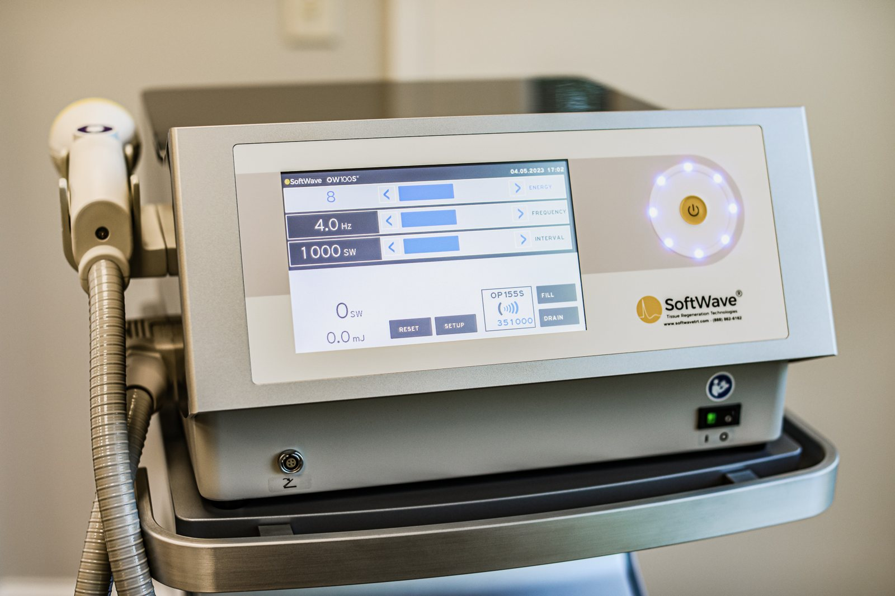

Chiropractic care
Restores joint motion, improves biomechanics, reduces pain and enhances neuromuscular coordination.
Soft-tissue therapy (NMR℠)
Neuromuscular Reeducation improves mobility, releases restrictions, eliminates scar tissue, corrects dysfunctional movement patterns and restores healthy neuromuscular coordination. How NMR works
Corrective exercise
Balances muscles, restores posture, rebuilds strength and improves movement patterns.
SoftWave™ tissue regeneration
Reduces inflammation, activates stem cells, breaks down scar tissue and accelerates healing.
Rapid Release Technology (RRT)
Releases adhesions, scar tissue, tension and nerve entrapment using therapeutic vibration.
Performance optimization
Strategies for hydration, nutrition, sleep, recovery cycles, training load and long-term durability.
SoftWave™ tissue regeneration
SoftWave applies short, high-intensity bursts of acoustic energy to soft tissue that is injured, scarred, painful or inflamed, to switch on the body's own healing response. It is non-invasive, needs no anesthesia, and sessions are short.
- Increases blood flow
- Reduces pain and inflammation
- Breaks down scar tissue
- Activates stem cell activity
- Accelerates tissue repair

TRU Holistic Injury Recovery
Every recovery plan follows the same principles: a careful assessment, precise hands-on therapy, and self-care habits that let the body heal.
Evaluation
A full evaluation of the structural and metabolic sides of your injury.
Hands-on care
Chiropractic adjustments and joint mobilization, with NMR soft-tissue work to free adhesions and restore pain-free range of motion.
Corrective movement
Stabilization exercises that rebuild strength, posture, balance and coordination.
Energy balance
Eating enough to meet the demands of training, health and performance.
Hydration
Keeping body water and electrolytes where they need to be.
Sleep and recovery
A consistent sleep schedule that supports school, sport and healing.
Conditions we treat
Upper body
Lower body
Not sure if we can help?
Call (925) 280-8210 or book a visit and we'll talk it through.
Book your appointment